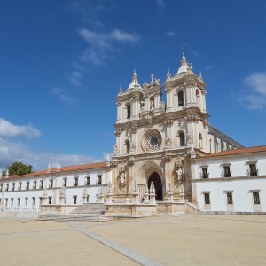

Ciudades interesenates cerca de Nazare
-
Diapositivas de Alcobaça
 - Monasterio de Santa Maria de Alcobaça (siglo XII), clasificado como Patrimonio mundial por la UNESCO.
-
Diapositivas de Fátima

- Santuario de Nuestra Señora del Rosario de Fátima Tres niños pastores, llamados Lucía dos Santos, Jacinta y Francisco Marto, afirmaron haber presenciado varias apariciones marianas en la Cova da Iria, Fátima, en Portugal, entre el 13 de mayo y el 13 de octubre de 1917.
-
Diapositivas de Nazaré

- La capital de las olas gigantes está en Portugal. Fue una gigantesca, de casi 24 metros de altura, que emergió en la Playa do Norte, el 1 de noviembre de 2011. La mayoría habría huido, pero no una leyenda del surf como el hawaiano Garret McNamara. Desde entonces, todo el mundo conoce Nazaré como la capital de las olas gigantes.
-
Diapositivas de Obidos

- Bonita ciudadela fortificada cerca de Nazaré. Óbidos ha sido conocida como la «Vila Das Rainhas» («villa de las reinas»), ya que desde el siglo XIII esta aldea era ofrecida por los monarcas portugueses a sus esposas a modo de regalo de boda
-
Diapositivas de Sintra
- Palacios y castillos A partir de la segunda mitad del siglo xix, los habitantes más adinerados se trasladaron a la periferia y en la villa se instalaron establecimientos de alojamiento que atrajeron a los visitantes.